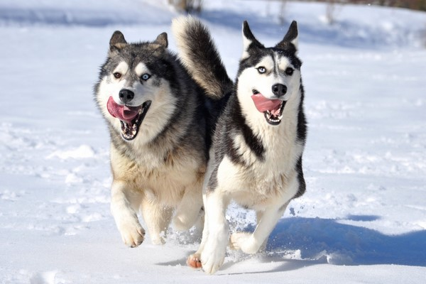

Chó Husky Sibir (Tiếng Nga: сибирский хаски, "Sibirsky hasky", Phiên âm: "hất-s-ki") là một giống chó cỡ trung thuộc nòi chó kéo xe có nguồn gốc từ vùng Đông Bắc Sibir, Nga. Xét theo đặc điểm di truyền, chó Husky được xếp vào dòng Spitz. Chó Husky có hai lớp lông dày, tai dựng hình tam giác và thường có những điểm nhận dạng khác nhau trên lông.
Chó Husky là giống chó rất ưa thích vận động do tổ tiên của chúng sống ở một trong những nơi lạnh giá nhất như Siberia, ở đây chó Husky nguyên thủy được phối giống bởi người Chukchi ở Đông Bắc Á nhằm mục đích kéo xe hàng trên một quãng đường dài trong điều kiện lạnh giá khắc nghiệt. Giống chó này được đưa tới Alaska trong thời kì khai thác vàng ở Nome rồi sau đó trở nên phổ biến ở Hoa Kỳ và Canada. Ban đầu Husky được nuôi để làm chó kéo xe nhưng về sau chúng trở thành thú nuôi trong gia đình.
Các giống chó Husky Sibir, Samoyed, và Alaskan Malamute đã được công nhận đều có chung nguồn gốc từ một giống chó cổ đại theo kết quả ADN công bố năm 2004.[2][3] Từ năm 1908, chúng được du nhập vào Alaska trong thời kỳ khai thác vàng và được sử dụng là chó kéo xe và chó đua xe. Ở đây, xe kéo bởi vì chó Husky nhanh chóng trở thành phương tiện phổ biến lúc bây giờ. Năm 1930, việc xuất khẩu chó ở Siberia bị dừng lại,[4] cũng là năm mà "câu lạc bộ chó giống Mỹ (AKC) công nhận giống chó Husky Sibir. Chín năm sau, giống chó này lần đầu tiên được đăng kiểm ở Canada. Năm 1938 United Kennel Club công nhận giống chó "Husky Bắc Cực" và đổi tên thành Husky Sibir vào năm 1991 cho tới nay.[5] Giống chó Husky nguyên thủy được nuôi và phối giống bởi người Chukchi được cho là đã tuyệt chủng nhưng một phóng viên của tạp chí "Geographical magazine" vào năm 2006 đã đưa ra báo cáo chúng còn sống sau chuyến công tác của anh tại Siberia.[6])